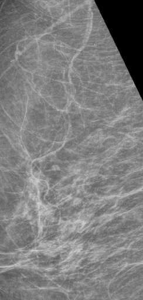
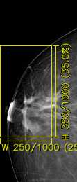
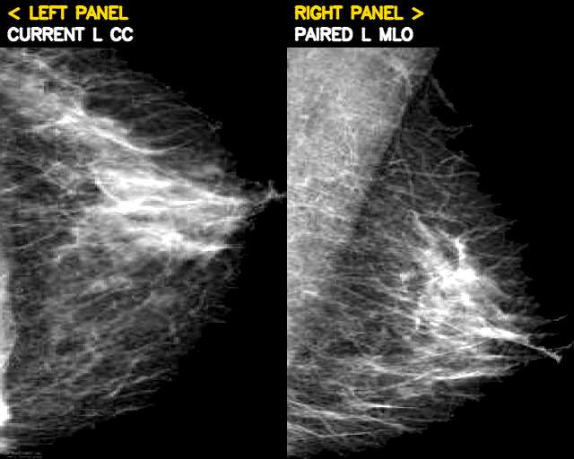
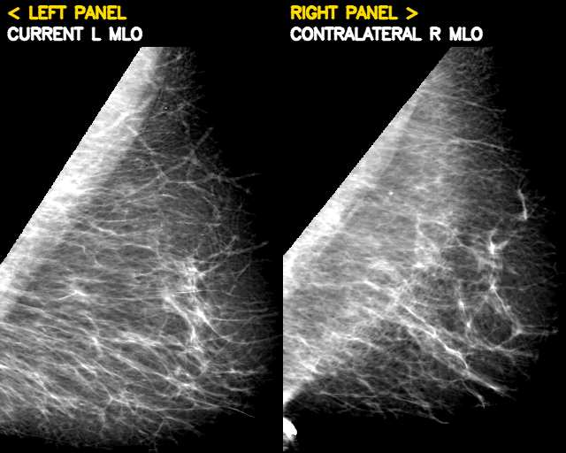

[DeepBreath Workshop, MICCAI 2026]
In this work, we explore MammoClaw, a training-free agent framework that leverages frozen MLLMs
for mammography analysis. To support agentic investigation, we equip the agent with lightweight
mammography-specific tools for targeted image analysis, including ROI, paired-view, and contralateral-breast
examination. MammoClaw iteratively gathers evidence through these tools, while skill evolution
enables non-parametric adaptation by transforming failed trajectories into reusable guidance for later runs.
We evaluate the framework on BI-RADS assessment and breast density estimation tasks. In our experiments, we
find that tools alone do not reliably improve performance, whereas evolved skills can improve tool-use
behavior and performance in some settings. Beyond these results, MammoClaw enables transparent
inspection of evidence acquisition, tool interactions, and failure modes, facilitating the analysis and
auditing of agent behavior. We view this work as an exploratory study of training-free, self-evolving
agentic approaches for mammography and hope it provides a concrete starting point for future work on
mammography-specific tools and self-evolution mechanisms.
MammoClaw, a training-free agent harness for exploring agentic mammography
analysis with frozen MLLMs, deterministic mammography tools, and an automated offline skill-evolution
workflow.
MammoClaw on BI-RADS assessment and breast density estimation.
Tool augmentation alone does not necessarily improve performance (BI-RADS macro-F1 0.108 → 0.106), while
skill evolution improves both performance (→ 0.148) and tool-use behavior.
Step 1: Agent Orchestration
Following the ReAct framework, the orchestration layer alternates between reasoning, tool invocation, and observation before producing a final prediction. A mammography case is represented as x = (I, q, 𝒞), where I is the input mammogram, q the task-specific question, and 𝒞 the candidate answer set. Let fθ be the frozen MLLM, 𝒜 the mammography tool library, and 𝒮 the skill bank. Before the first reasoning step, a lightweight retriever selects relevant skills, which are prepended to the initial prompt context ℋ0:
Sx = R(q, 𝒮)
At step t, the MLLM either produces a final prediction ŷ ∈ 𝒞 or selects a tool call ut = (At, pt), where pt holds tool-specific inputs such as ROI coordinates. The tool returns an observation that is appended to the context:
ot = At(x, pt), ℋt = ℋt−1 ⊕ (ut, ot)
The resulting trajectory τ = {(ℋt−1, ut, ot)}t=1..k is an explicit record of the agent's reasoning and tool interactions, and is later used for skill evolution.
Step 2: Mammography Tools
The agent has access to a lightweight suite of deterministic, model-free tools: task-context tools, single-image ROI inspection, cross-view and contralateral comparison, and simple image-processing utilities (see Tool Suite). They return either text (BI-RADS definitions, domain knowledge, metadata) or images (ROI crops, paired-view composites, contralateral comparisons). Access alone does not guarantee effective use: the agent must still decide when to call a tool, which one, and how to interpret its output.
Step 3: Collecting Failed Trajectories
Skill evolution runs offline on a labeled reference set 𝒟ref = {(xj, yj)}j=1..N, held out from test evaluation. Starting from an empty skill bank 𝒮(0), at round r the agent is run on the reference set and failed trajectories are collected:
𝒯fail(r) = { (τj(r), xj, yj) | ŷj(r) ≠ yj }
Step 4: Distilling Skills
A teacher model G analyzes all failed trajectories together and proposes candidate skills 𝒮̃(r) = G(𝒯fail(r)). Skills capture reusable reasoning strategies, tool-use patterns, and corrections for recurring failure modes. They are not trained parameters: they are textual policies mined from prior failures and injected into the agent context at inference time.
Step 5: Updating the Skill Bank
Near-duplicate candidates are filtered using name-token Jaccard similarity and semantic cosine similarity over skill embeddings. The remaining novel skills Δ𝒮(r) are added to the bank:
𝒮(r+1) = 𝒮(r) ∪ Δ𝒮(r)
All tools are deterministic and model-free. Below is one representative call per tool, drawn directly from logged agent trajectories.
inspect_current_exampleReturns the current example metadata.
Output: laterality=R, view=MLO, subject_age=61.0, has_paired_view=true, paired_view=CC
retrieve_knowledgeRetrieves task-specific domain knowledge, such as BI-RADS category definitions (0–6, including 4A/4B/4C) for BI-RADS assessment, or density-band definitions for density assessment.
inspect_mammogram_roiCrops and enlarges a region using normalized 0–1000 image-grid coordinates, with optional contrast enhancement.
Input: bbox=[200, 200, 800, 800], enhance_contrast=true

measure_finding_sizeMeasures the width and height of a finding by drawing annotated measurement bars on a contextual crop.
Input: bbox=[0, 200, 250, 550], “spiculated mass at nipple/areolar region”

inspect_paired_mammogram_viewReturns the paired CC and MLO projections of the same breast side by side.

inspect_contralateral_breastCompares the current breast with the contralateral breast from the same subject and view projection.

estimate_breast_densityEstimates fibroglandular density via dual Otsu thresholding, e.g. density_percent=35.5, with a caveat not to assign A/B/C/D from the percentage alone.
measure_image_sharpnessScores technical sharpness via Laplacian variance and Tenengrad gradient energy, returning a sharpness rating.
compute_tissue_statisticsComputes intensity mean, standard deviation, entropy, and skewness over the breast foreground (background excluded via Otsu).
Datasets. We evaluate on Mammo-Bench for two tasks. Following its protocol, each source dataset is randomly split into 80% training and 20% evaluation. BI-RADS assessment uses KAU-BCMD (448 evaluation exams; BI-RADS 1/3/4/5 with 367/59/18/4 examples), which provides paired CC and MLO views and contralateral images. Breast density assessment uses DMID (108 evaluation exams; density A/B/C/D with 18/39/42/9 examples), which contains single-view mammograms only.
Agent and teacher. The agent backbone is Qwen3.5-35B-A3B. Skill evolution uses
DeepSeek-V4-Flash as the teacher LLM, with one evolution iteration and at most 10 new skills
per iteration. The reference set consists of 100 randomly sampled training examples with ground-truth
labels. At inference, all task-relevant skills in the bank are injected into the agent context.
Metrics. We report macro-F1 with 95% bootstrap confidence intervals. Significance is assessed with paired bootstrap resampling (5,000 resamples) on macro-F1 and McNemar's test on accuracy, both Holm–Bonferroni corrected across the three pairwise comparisons per task.
Feedback and collaboration enquiries are welcome by email, including critical ones.
@InProceedings{Nakka_2026_MICCAI,
author = {Nakka, Krishna Kanth},
title = {MammoClaw: Towards Skill-Evolving Agent Harness for Breast Cancer Mammography Analysis},
booktitle = {Proceedings of the Deep Breast Workshop on AI and Imaging for Diagnostic and Treatment Challenges in Breast Care, MICCAI 2026},
year = {2026},
}
This website is adapted from Nerfies, licensed under a Creative Commons Attribution-ShareAlike 4.0 International License.